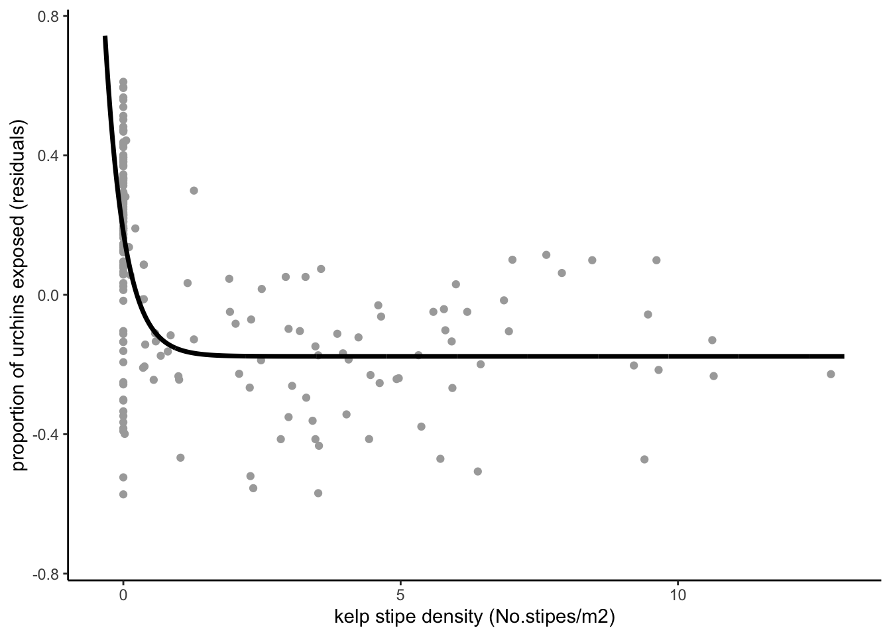
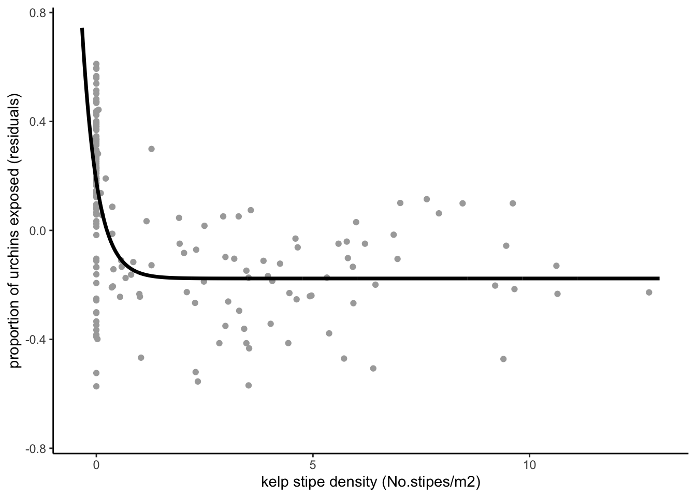

figure2a<- readRDS(here::here("figures/figure2a.rds"))
figure2aWarning: Removed 90 rows containing missing values (`geom_point()`).
Course: BIOE215 Data Science.
Instructor: Max Czapanskiy
Team members: Nikka Malakooti, Andrea Paz-Lacavex, Maddie Mcnelis, Cecilia Girvin.
Fall Quarter 2023
This Quarto document is our Final Paper for BIOE215 Data Science. For this activity we used techniques to set up a computational analysis (using RStudio, git, and GitHub) and techniques for analyzing data (creating and accessing data structures, writing functions, and using the tidyverse). We have applied those skills to replicate Figure 2 (a and b) from [@smith2021].
The paper describes a shift in top predator foraging due to altered grazer body condition, illustrating the importance of trait-mediated interactions in ecosystem stability. The authors study urchin barrens-kelp forest mosaics in the Monterey Bay where sea otters move among patches of kelp and barrens to feed on urchins; they show these otters preferentially predate on kelp forest urchins. The finding we replicate in figure 2A show a dramatically lower proportion of exposed sea urchins (the y-axis shows the residuals from a linear regression on the log-transformed proportion of exposed urchins) coincident with higher kelp stipe density. Most urchins were concealed where the mean kelp stipe density was greater than one stipe per square meter.
Smith and collaborators used data from 236 underwater surveys that covered randomly selected sites. Each site was sampled using 8, 5m transects over the summer of 2017. Kelp stipe density was the number of stipes in the entire survey area (78 m^2). Urchin foraging behavior was determined by analyzing photographs of 2 randomly placed quadrats from each site. How exposed urchins were determined whether they were actively foraging. Data is a CSV file, each row representing one site, and each column representing either an identifier of that site or data associated with that site.
Data retrieved from Dryad are linked here.
Description of data and metadata are linked here.
Analysis plan can be found here.
General notes found here.
figure2a<- readRDS(here::here("figures/figure2a.rds"))
figure2aWarning: Removed 90 rows containing missing values (`geom_point()`).
Our results closely matched that of the original paper. The only difference we ran into was that we fit a slightly different negative exponential decay function to the data. Some aesthetics of our figure are also slightly different, though we confidently feel that we could more closely replicate if necessary!